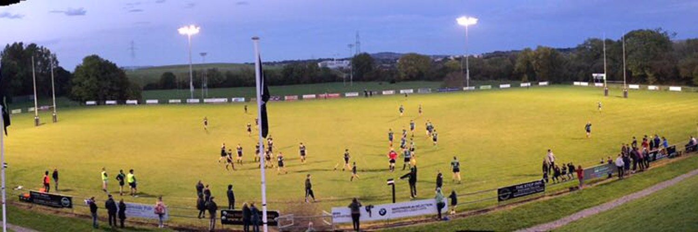

De La Salle Palmerston FC (DLSP)
Rugby
Drop-off
Mini rugby programme teaching age-appropriate rugby skills and teamwork to boys and girls, part of one of Leinster's largest and oldest mini-youth sections with IRFU-certified, Garda-vetted coaches.
Verified 2026-07-18
Schedule: Ongoing membership
Ages: Under 6 to Under 12
Supervision: Drop-off
Membership fees and training times are managed through the club's registration system and were not published as static pricing.
Class types: Minis (Under 6 to Under 12)
Contact: miniyouth@dlspfc.ie
Facilities:
Outdoor VenueFree Parking
Outdoor VenueFree Parking
Address: Kirwan Park, Kilternan, Dublin 18
View on Google Maps →
Visit Website
View on Google Maps →